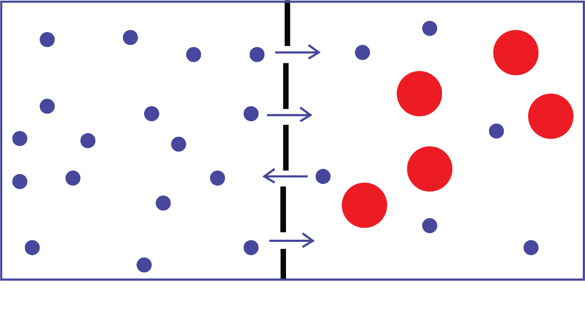

66
Student’s Book - Form Two
Biology for Secondary Schools
4.
Leave the mixture completely
undisturbed overnight.
5.
Describe the colour distribution.
6.
Repeat the activity using copper
sulphate or laundry blue instead
of potassium permanganate or tea
bags.
7.
Explain your observations.
Questions
1.
How did the colour of potassium
permanganate spread in the water
in the test tube?
2.
How long did it take for the colour
to spread evenly in the test tube?
Osmosis
Osmosis is a passive diffusion of water
through a semi-permeable (partially
permeable) membrane. It is regarded
as a special form of diffusion because
it involves the movement of water
molecules through a semi-permeable
membrane. In osmosis, water molecules
move from a low concentrated solution
into a high concentrated solution through
a semi-permeable membrane, as shown in Figure 3.2. The partially permeable membrane is only permeable to water.
For osmosis to take place, there must
be two solutions separated by a semi-
permeable membrane. One solution
should have a greater volume of water
and a lesser quantity of solute than
the other solution. This solution is
hypotonic, meaning that it has a lower
solute potential or higher water potential.
The second solution should have a lesser
volume of water and a greater quantity
of solute than the other solution. This
solution is hypertonic, meaning that it
has a higher solute potential or lower
water potential. If the two solutions have
the same water or solute potential, then,
they are said to be isotonic.

Water molecule
Hypotonic solution
Hypertonic solution
Sucrose molecule
Partially permeable membrane
Net movement of water molecules
Figure 3.2: Movement of water molecules during osmosis
Activity 3.2: Demonstrate osmosis using a cellophane membrane
Materials
Cellophane membrane, beaker, sugar solution, water, thistle funnel, and a clamp
Procedure
1.
Using a rubber band, tightly cover
the open end of a thistle funnel
with cellophane membrane.
08/04/2026 10:18:16